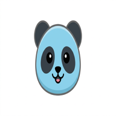

Guía para usuarios: agregá la aplicación web (PWA) a la pantalla de inicio en iPhone, iPad y Android, con Safari o Chrome. Incluye entornos de producción y desarrollo.
Qué vas a obtener
Pandi funciona en el navegador. Al instalarla (añadir a inicio), se abre como una app a pantalla casi completa, con icono propio en el escritorio del dispositivo. Necesitás internet para iniciar sesión y trabajar con datos en vivo.
1. Elegí el entorno
Producción Uso real del negocio
Datos productivos. Icono del panda con fondo blanco en el acceso directo.
https://pandi.company
Así debería verse el icono al agregar producción al inicio.
Desarrollo Pruebas (preview)
Base de datos de prueba. Mismo programa, otro servidor. Icono del panda con fondo celeste para distinguirlo de producción.
https://preview.pandi.company

Así debería verse el icono al agregar preview al inicio.
Importante: no mezcles los dos entornos en tareas críticas: en preview los cambios no son los de producción.
2. iPhone o iPad — Safari (recomendado en iOS)
Apple integra mejor la instalación con Safari. Chrome en iPhone usa el mismo motor, pero los menús pueden variar.
Pasos en Safari
Abrí Safari y entrá a la dirección de producción o preview (arriba).
Iniciá sesión con tu usuario y contraseña si te lo pide.
Tocá el botón Compartir
(cuadrado con flecha hacia arriba), en la barra inferior.
Desplazá el menú y elegí Agregar a inicio o Add to Home Screen.
Podés editar el nombre (por defecto suele ser «Pandi»). Si aparece Abrir como app web, dejalo activado para que abra como aplicación.
Tocá Agregar (arriba a la derecha). El icono quedará en tu pantalla de inicio.
Si ves una letra «P» en lugar del panda, iOS no pudo usar el icono (usa la primera letra del nombre «Pandi»). Probá en este orden:
En Safari, abrí directamente https://pandi.company/apple-touch-icon.png (producción) o el mismo path en preview. Tenés que ver el PNG del panda. Si ves error o página de login (preview con protección Vercel), el acceso al icono falla hasta estar autenticado o usar producción para instalar la app.
Borrá el icono de la pantalla de inicio. En Ajustes → Safari → Avanzado → Datos de sitios web eliminá datos del sitio, cerrá Safari por completo y volvé a abrir la URL.
Repetí Añadir a la pantalla de inicio desde Safari (no desde un navegador dentro de otra app).
iPhone o iPad — Google Chrome
Abrí Chrome y cargá la misma URL (producción o preview).
Iniciá sesión.
Tocá los tres puntos (menú) abajo o arriba según el modelo.
Buscá Agregar a la pantalla de inicio o Add to Home Screen y confirmá.
En iOS, Chrome puede comportarse distinto según la versión; si no aparece la opción, usá Safari.
3. Android — Google Chrome
Abrí Chrome y entrá a https://pandi.company o https://preview.pandi.company.
Iniciá sesión.
Tocá el menú ⋮ (tres puntos verticales arriba a la derecha).
Elegí Instalar aplicación, Agregar a la pantalla principal o Instalar app (el texto exacto depende del idioma y la versión).
Confirmá en el cuadro que aparece. El icono se agrega al inicio o al cajón de aplicaciones.
A veces Chrome muestra un banner «Instalar app» al entrar al sitio: también podés usarlo para instalar en un solo toque.
Android — Samsung Internet u otros navegadores
Menú principal (tres líneas o tres puntos) → opción similar a Agregar página a o Instalar aplicación. Si no figura, abrí el sitio con Chrome.
4. Tablets
Los pasos son los mismos que en el teléfono: iPad con Safari (o Chrome) como arriba; tablets Android con Chrome como en la sección Android.
5. Actualizar la app cuando hay una versión nueva
Al abrir Pandi, si el sistema lo ofrece, aceptá actualizar o recargar cuando aparezca el aviso del servicio de trabajo en segundo plano.
Si algo se ve raro, cerrá la app por completo (deslizá desde el multitarea) y volvé a abrirla desde el icono.
En último caso, eliminá el acceso directo y volvé a instalar siguiendo esta guía (no perdés tu usuario: es solo un acceso al sitio).
6. Quitar el icono del inicio
iPhone/iPad: mantené pulsado el icono → Eliminar app → Eliminar de la pantalla de inicio (no borra tu cuenta en el servidor).
Android: mantené pulsado el icono → Eliminar o arrastrá a «Eliminar».